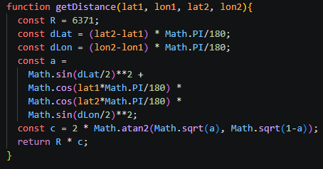
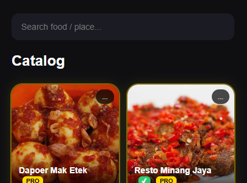
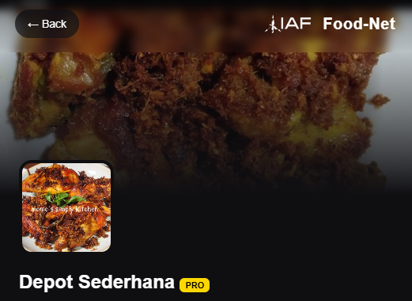

Food-Net adalah platform discovery-based food information system yang membantu pengguna menemukan lokasi kuliner terdekat melalui visual catalog, distance engine, merchant profile, dan direct map navigation.
Try it yourself →Food-Net dirancang bukan hanya sebagai katalog tempat makan, tetapi sebagai platform eksplorasi digital berbasis lokasi. Sistem memadukan visual-first interface, geolocation, smart sorting, dan merchant profile dalam satu pengalaman yang ringan, cepat, dan intuitif.

Menggunakan Geolocation API untuk memahami posisi user dan menampilkan merchant relevan di sekitar area pengguna.

Filtering instan tanpa reload halaman, memungkinkan pencarian merchant cepat dan natural.

Setiap merchant memiliki halaman profil lengkap: deskripsi, gallery, operational info, dan map routing.
Generasi awal masih berfokus pada pendekatan map overview.
UI berpindah menjadi visual merchant catalog yang lebih natural.
Detail page dikembangkan menjadi rich merchant page.
Automasi dummy database skala besar untuk stress testing.
Rebranding visual dan identitas platform sebagai standalone product.
Buka Food-Net dan mulai temukan lokasi kuliner terdekat dengan pengalaman eksplorasi yang lebih visual, cepat, dan intuitif.
Try it yourself →